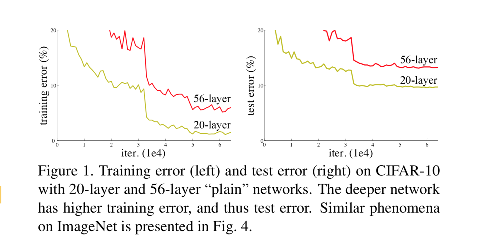
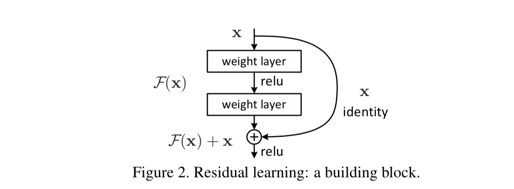
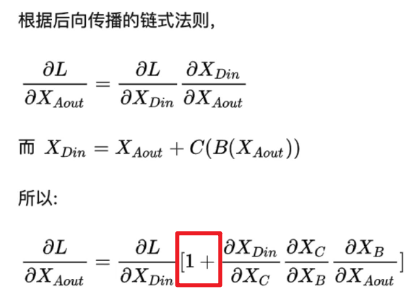
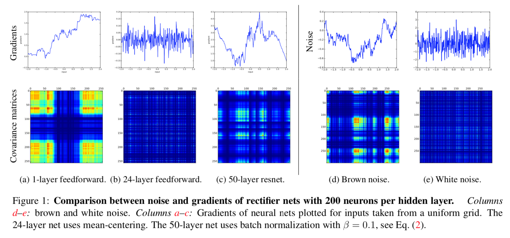

The Residuals 残差#
每个编码器中的每个子层（自注意力机制）周围都有一个残差连接，并且后面是层归一化步骤
如果我们要可视化与自注意力相关的向量和层范数操作，它看起来像这样：
可以看到到上图\(X_1\)到Add & Normalizez，有一条路是经过自注意机制运算的，而另一条路是直接到Add & Normalizez中的，这样做的理由是进过变换可能损失会更大，所以让模型自己选着一条损失小的路线。
残差模块解决了什么问题？#
一定程度上可以缓解梯度弥散问题
现代神经网络一般是通过基于梯度的BP算法来优化，对前馈神经网络而言，一般需要前向传播输入信号，然后反向传播误差并使用梯度方法更新参数。
根据链式法则，当导数<1时，会导致反向传播中梯度逐渐消失，底层的参数不能有效更新，这也就是梯度弥散(或梯度消失)；当 导数>1 时，则会使得梯度以指数级速度增大，造成系统不稳定，也就是梯度爆炸问题。此问题可以被标准初始化和中间层正规化方法有效控制，这些方法使得深度神经网络可以收敛。
一定程度上解决网络退化问题
在神经网络可以收敛的前提下，随着网络深度增加，网络的表现先是逐渐增加至饱和，然后迅速下降。
网络退化问题不是过拟合导致的，即便在模型训练过程中，同样的训练轮次下，退化的网络也比稍浅层的网络的训练错误更高，如下图所示。
一定程度上缓解梯度破碎问题
在标准前馈神经网络中，随着深度增加，梯度逐渐呈现为白噪声(white noise)。许多优化方法假设梯度在相邻点上是相似的，破碎的梯度会大大减小这类优化方法的有效性。另外，如果梯度表现得像白噪声，那么某个神经元对网络输出的影响将会很不稳定。
残差模块的结构#
一个残差块（shortcut connections/skip connections）分为直接映射部分\(\left(x_{l}\right)\)和残差部分\(F\left(x_{l}, W_{l}\right)\)，可以表示为：
示意图如下图所示:
残差模块如何解决上述问题#
根据后向传播的链式法则可以看到，上述残差块中，因为增加了\(x\)项(恒等映射)，那么该网络求\(x\)的偏导的时候，多了一项常数1，所以反向传播过程，梯度连乘，也不会造成梯度消失。
在前向传播时，输入信号可以从任意低层直接传播到高层。由于包含了一个天然的恒等映射，一定程度上可以解决网络退化问题。
The Shattered Gradients Problem: If resnets are the answer, then what is the question? 一文中提到在标准前馈神经网络中，随着深度增加，神经元梯度的相关性(corelation)按指数级减少 (\(\frac{1}{2^L}\)）；同时，梯度的空间结构也随着深度增加被逐渐消除。这也就是梯度破碎现象。 